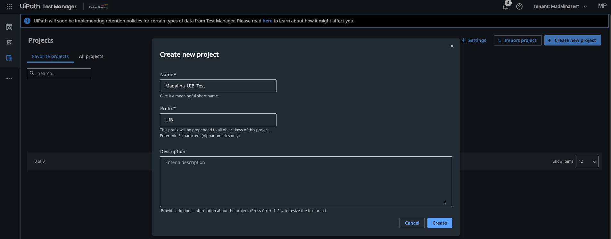
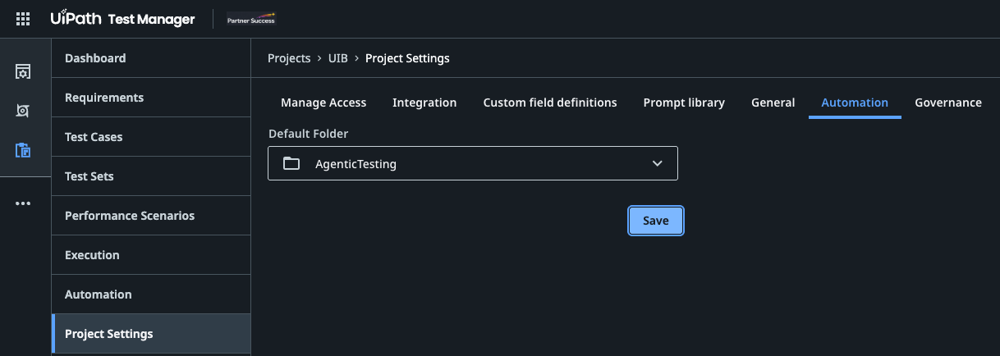

动手实践 · 测试环境准备
🧭 智能体测试（Agentic Testing）：动手实践课程¶
借助 Autopilot for Testers、Autopilot for Developers 和编码智能体，在 UiPath Test Cloud 中把 UiBank 设计文档一步步变成需求、测试用例、自动化、测试集和执行。
👋 概述¶
某银行的 QA 团队每个迭代都会收到一份新的应用说明。有人把它整理成需求；有人在 Test Manager 里手动录入测试用例；又有人在 Studio 里逐个重建，把每个字段、每个按钮都捕获一遍；第四个人把它们分组成测试集、运行，再把结果复制进状态邮件。四次交接，几个小时的点点点——而且不出一个月，文档、需求、测试用例和自动化就各说各话了。
在本次课程中，你会让 AI 智能体来完成上面每一项工作，同时看清哪些地方仍需要人来拍板。Autopilot 在产品内部工作：在 Studio 中，它可以创建需求、测试用例、测试集和表达式；在 Test Manager 中，它可以评估需求、生成测试用例，并自主运行测试用例。Codex 或 Claude Code 这样的编码智能体则在你的终端里工作，通过 uip CLI（命令行）和 UiPath skills（UiPath 技能）完成同样的自动化工作。你会先亲手构建一个测试用例，这样才能判断智能体替你做出来的东西好不好。
培训环境
请访问 https://staging.uipath.com/partnersuccess，使用租户 MadalinaTest 登录。本课程中的 Autopilot 功能运行在 UiPath staging 上，请确保 Studio、uip CLI 和浏览器都指向这个环境。
🗺️ 你将做什么¶
动手实践部分按照议程进行：
根据需求生成测试用例，亲手自动化 Login 测试用例，生成下一个，观看测试用例自主运行，再多加几个
👤 Test Manager 中的 Autopilot、你、Studio 中的 Autopilot 或编码智能体
🏦 场景¶
整个课程中，工作是这样流转的：
UiBank 设计文档 (.docx)
│
▼
环境准备 在 Test Manager 中新建 {YourName}_UIB_Test 项目 ──▶ 在 Studio 中新建测试自动化项目 ──▶ 完成连接
│
▼
需求 Studio 中的 Autopilot ──▶ 需求 ──▶ Test Manager 中的 Autopilot 评估 ──▶ 你来改进 ──▶ 重新评估
│
▼
测试用例 Test Manager 中的 Autopilot ──▶ 测试用例（手动步骤）
├─ Login：你在 Studio 中亲手自动化
├─ 下一个：由 Studio 中的 Autopilot 或你的编码智能体自动化
├─ Run Autonomously：Autopilot 亲自运行一个手动测试用例
└─ 再多加几个
│
▼
执行 Executions 选项卡 ──▶ 迄今为止的每一次运行
│
▼
测试集 Studio 中的 Autopilot ──▶ 测试集 ──▶ 发布 ──▶ 运行 ──▶ 执行
📄 设计文档¶
本课程的一切都源自 UiBank Web 应用的一份设计文档：E2E UiBank Online Banking。请下载 E2E UiBank Online Banking.docx，并保存到你的工作坊文件夹中。
应用
UiBank Web Application v2.0.0（Accounts / Transfers / Loans / Profile）
环境
在 Google Chrome 中访问 https://uibank.uipath.com
文档内容
登录，开立一个 Checking 账户和一个 Savings 账户，在两者之间转账，申请贷款，按 Loan ID 查询贷款，并核验用户资料
文档用八个步骤描述了客户旅程。你不会把它当成一条很长的端到端流程来测试，而是让每个步骤都成为一条需求，并拥有自己的测试用例。这样一旦失败，就能直接定位到出问题的功能，某个页面坏了也不会掩盖其他功能的结果。
0
登录与初始账户状态
/login、/welcome、/accounts
✅ 登录成功；记录初始账户状态
1
创建 Checking 账户
/accounts/account-apply
✅ Checking 账户出现在账户汇总中
2
创建 Savings 账户
/accounts/account-apply
✅ Savings 账户出现在账户汇总中
3
账户间转账
/accounts/transfer-money
✅ 两个账户的余额变动恰好等于转账金额
4
提交贷款申请
/loans/apply
✅ 生成 Loan ID
5
查询贷款状态
/loans/lookup
✅ 金额和期限与提交时一致
6
用户资料身份核验
/userprofile
✅ 用户名和邮箱与当前登录用户一致
7
退出登录与证据收集
/
✅ 会话已关闭；截图已附到报告中
🔢 测试数据¶
以下是设计文档中定义的变量。请在提示词和自动化中都使用它们，让需求、测试用例和结果描述的是同一件事。
| 变量 | 含义 | 取值 / 规则 |
|---|---|---|
var_Username, var_Password |
UiBank 登录凭据 | 来自 Orchestrator 凭据资产 {YourName}_UiBankCredential，绝不硬编码。 |
var_CheckingNickname |
新建的 Checking 账户 | AutoChecking_<yyyyMMddHHmmss>，每次运行唯一 |
var_SavingsNickname |
新建的 Savings 账户 | AutoSavings_<yyyyMMddHHmmss>，每次运行唯一 |
var_TransferAmount |
转账金额 | 10，不得超过转出账户余额 |
var_LoanEmail |
贷款申请人邮箱 | 你在 UiBank 上注册的邮箱 |
var_LoanAmount |
贷款金额 | 5000 |
var_LoanTerm |
贷款期限（年） | 3（可选值：1、3、5、10） |
var_YearlyIncome |
税前年收入 | 60000 |
var_Age |
申请人年龄 | 35 |
var_LoanID |
UiBank 返回的 Loan ID | 提交贷款后提取 |
每个测试用例都必须处理的三件事
- 独立运行。 测试用例可能以任意顺序、在任意机器人上运行。在文档里，转账使用的是第 1 步和第 2 步创建的账户，查询使用的是第 4 步得到的 Loan ID。而作为测试用例，转账要在开头自行开立两个账户，查询也要在开头自行提交一笔贷款。
- 还没有账户。 全新的 UiBank 用户看到的不是表格，而是 "No accounts at this time, apply for a new account today!"。这是合法的初始状态，不是失败。
- 规则未知。 UiBank 是一个演示应用。余额和贷款审批规则都没有文档说明，数据也可能被重置。请检查贷款的实际结果，而不是默认它一定获批。
📋 Test Manager 是什么？¶
⚙️ 环境准备¶
- 在浏览器中打开 MadalinaTest 租户上的 Test Manager。
🆕 在 Test Manager 中新建项目¶
需求、测试用例、测试集和执行都存放在 Test Manager 项目中。先把你的项目建好：后面各部分中 Autopilot 生成的所有内容都会放进去。
- 访问 https://staging.uipath.com/partnersuccess，选择 MadalinaTest 租户，然后打开 Test Manager。
- 在 Projects（项目）页面，选择 Create new project（新建项目）。
-
在 Create new project 对话框中填写：
- Name:（名称）
{YourName}_UIB_Test - Prefix:（前缀）
UIB。至少 3 个字符，只能包含字母和数字。 - Description:（描述）可选，例如 UiBank online banking tests。

Create new project 对话框，已填写{YourName}_UIB_Test，前缀为UIB。前缀有什么用
项目中的每个对象都会获得一个以前缀开头的键：第一条需求是
UIB:1，下一条是UIB:2，依此类推，需求、测试用例和测试集统一编号。前缀要简短好认，不必追求描述性。 - Name:（名称）
-
选择 Create（创建），然后打开项目。目前它还是空的。
-
设置项目的默认 Orchestrator 文件夹。之后测试集运行自动化测试用例时需要用到它。
- 在项目左侧菜单中选择 Project Settings（项目设置），然后打开 Automation（自动化）选项卡。
- 在 Default Folder（默认文件夹）中选择
AgenticTesting。 - 选择 Save（保存）。

Project Settings > Automation，默认文件夹为AgenticTesting。
为什么项目名里要带上你的名字
课程中所有人都在同一个租户里工作。带上名字，你就能在 Projects 列表中轻松找到自己的项目，也能让你的需求、测试用例和结果与其他人的互不干扰。
🛠️ 在 UiPath Studio Desktop 中新建测试自动化项目¶
- 打开 Studio。在 Start（开始）界面的 New Project（新建项目）下，选择 Test Automation（测试自动化）。
-
在 New Blank Test Project（新建空白测试项目）对话框中填写：
- Name:
{YourName}UiBankTests - Description: 可选，例如 Test Automation Project

- Name:
-
选择 Create。
- Studio 会打开新项目。在 Project（项目）面板中展开 Dependencies（依赖项），确认测试相关的包都已就位，例如
UiPath.Testing.Activities和UiPath.UIAutomation.Activities。
为什么要用测试自动化项目
测试自动化项目就是为测试用例而生的：它自带测试活动、Given / When / Then 模板和 Test Explorer 面板。其中的每个测试用例都可以关联到 Test Manager 中的测试用例，在那里运行时，结果也会回传到 Test Manager。
🔗 连接到 Test Manager¶
项目需要知道它的需求、测试用例和结果归属于哪个 Test Manager 项目。任选一种方式：
- 在 Explorer（资源管理器）面板中右键单击项目名称，选择 Project Settings。
- 选择 Test Manager Configuration（Test Manager 配置）。
- 在 Test Manager Settings（Test Manager 设置）下输入 Test Manager URL
https://staging.uipath.com/partnersuccess/MadalinaTest/testmanager_，然后选择 Connect（连接）。状态会变为 Connected（已连接）。 - 在 Default Project（默认项目）中输入前缀
UIB，然后选择 {YourName}_UIB_Test (UIB)。 - 选择 OK（确定）。
在 Studio 中关闭项目，在工作坊文件夹中启动编码智能体，然后给它这段提示词：
Connect the Studio project in ./{YourName}UiBankTests to Test Manager at
https://staging.uipath.com/partnersuccess/MadalinaTest/testmanager_ with my {YourName}_UIB_Test project
(prefix UIB) as the default project, and show me uip rpa tm status.
然后在 Studio 中重新打开项目。连接信息保存在项目的 .tmh/config.json 中，因此 Studio、Autopilot 和 CLI 用的都是同一个连接。
✅ 确认准备就绪¶
- Studio 显示 {YourName}_UIB_Test 为默认 Test Manager 项目。
- Studio 中可以打开 Autopilot 面板。
- 浏览器中已打开 Test Manager，并位于 {YourName}_UIB_Test 项目中。
你的工作坊文件夹现在应该是这样的：
workshop/
├── {YourName}UiBankTests/ ← Studio 测试自动化项目，已连接到 Test Manager
└── E2E UiBank Online Banking.docx ← 设计文档
环境准备完成
Test Manager 中有了新的 {YourName}_UIB_Test 项目，Studio 中也有了与之连接的新测试自动化项目。现在，Autopilot 可以直接把需求写进去了。
🚀 后续步骤¶
需求
由 Studio 中的 Autopilot 根据一份设计文档生成的八条需求，并经 Test Manager 中的 Autopilot 评估和改进
测试用例
由 Test Manager 中的 Autopilot 生成的测试用例；Login 由你亲手自动化；更多测试用例由 Studio 中的 Autopilot 或编码智能体自动化；外加一次自主运行
执行
每次运行都记录了结果和证据，并可追溯到对应的需求
测试集
一个冒烟测试集和一个回归测试集，由 Autopilot 创建并在机器人上执行
本周
- 明天再跑一次回归测试集。还能通过吗？如果不能，是测试的问题，还是 UiBank 的问题？
- 自动化 Autopilot 生成的某个反向测试用例，例如转账金额大于 Checking 账户余额。
未来 30 天
- 拿一份你们团队真实的设计文档，按同样的几个部分走一遍：需求、测试用例、测试集。
- 换另一种智能体试试：如果你的第二个测试用例用的是 Autopilot，那就用编码智能体自动化下一个，反之亦然。
- 把一个测试用例改成数据驱动，让它用多组取值运行。
长期
- 带着问题来。没有哪个问题算太基础，尤其是在起步阶段。
- 遇到问题请告诉我们。一旦技能猜错、命令失败，或者某一步要试三次才成功，马上运行
uip feedback send。
⚠️ 你会遇到的常见问题¶
每个 QA 团队在第一个月都会学到的事。
信任，但要验证
Autopilot 和编码智能体又快又自信。请认真阅读生成的需求、测试用例和断言：一个什么都不检查的测试，每次都会通过。
选对智能体
产品里眼前的活交给 Autopilot；跨文件、跨项目、跨产品的工作交给编码智能体。
测试用例相互独立
每个测试都在 Given 中准备好自己的数据。找机会换个顺序运行一次，证明这一点。
好的手动步骤，一举两得
每个步骤只包含一个操作和一个预期结果，既能帮助 Autopilot 生成自动化，也能帮助它自主运行测试用例。
绝不手写选择器
从运行中的应用捕获目标，存入对象存储库（Object Repository）。一个看似合理却什么都匹配不到的选择器，代价远比捕获一次要高。
同一个环境
Studio、CLI 和浏览器都要在同一个租户上。大多数「Autopilot 找不到我的项目」的问题，都是因为 Studio 登录到了别的地方。
⌨️ 附录：CLI 速查表¶
如果你用编码智能体生成测试用例或运行测试集，就会看到它通过 uip CLI 运行以下命令。每条命令都可以加上 --output json。
| 命令 | 作用 | 何时会看到 |
|---|---|---|
uip skills install |
将 UiPath skills 安装到你的编码智能体中 | 首次设置 |
uip login / uip login status |
向租户进行身份验证 / 检查会话 | 每次会话开始时 |
uip tm project list --filter <key> |
查找 Test Manager 项目 | 进行任何 Test Manager 工作之前 |
uip tm requirements list / uip tm testcases list |
列出需求和测试用例 | 检查覆盖率 |
uip rpa tm connect / set-default-project |
将 Studio 项目连接到 Test Manager | 环境准备 |
uip rpa validate / uip rpa build |
检查并构建项目 | 每次修改之后 |
uip rpa pack + uip or packages upload |
打包并发布到 Orchestrator | 运行测试集之前 |
uip tm testcases link-automation |
将自动化绑定到 Test Manager 测试用例 | 发布之后 |
uip tm testsets run + uip tm wait |
执行测试集并等待结果 | 运行测试集 |
uip tm report get / uip tm result download |
汇总一次执行 / 下载 JUnit XML | 生成报告 |
uip feedback send |
报告缺陷或猜错的技能 | 任何出问题的时候 |